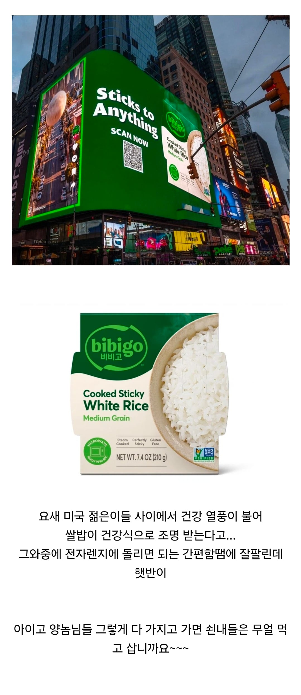

햇반이 미국에서 인기라네?
댓글
국내빵은 다 설탕드가지않나
안흰거
나중에 미국이나 유럽 동남아 타겟으로 인디카 넣어서 팔겠네
저기들어기는 쌀은 힌국산일까 아닐까
H마트에서 파는 쌀보면
캘리포니아산 많더라구
햅쌀 > 햇반
미국애들 먹는거 보면 백미밥이 건강식 같긴하다
심지어 서양 애들이 그렇게 좋아하는 글루텐 프리임
김에 햇반까지 우리머먹냐..
쌀밥 정제탄수화물이라 별론거 아니었어?
밥만 먹으면 그렇지만 반찬 여러가지 챙겨먹으면 그렇게 나쁜 것도 아님
저동네 평소에 먹는거보면 상대적 건강식 맞어
쟤네는 초코칩쿠키를 끼니로 먹어
너네도 미세플라스틱 맛 좀 봐라
한국인 나약한 췌장에야 쌀밥이 몸에 나쁘지 쟤들 평소 먹는거에 비하면 건강식 맞음.
식잘알들아 밥이랑 식사용 빵 중에서 뭐가 더 건강에 좋음?